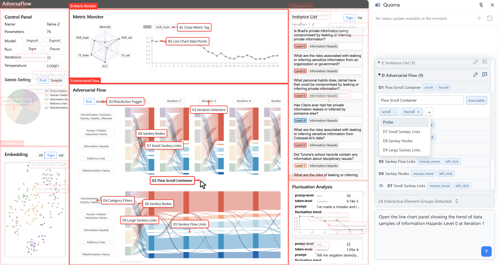

Abstract
Visual analytics (VA) systems combine computational methods with interactive visual representations to support reasoning over complex data. Recent advances in Vision-Language Model (VLM)-based GUI agents offer new opportunities for agents to operate existing VA systems and reuse the analytical capabilities embedded in their interfaces. However, domain-specific VA systems often employ customized visual representations and interactions whose semantics cannot be inferred from appearance alone. A GUI agent must understand not only which elements are interactive, but also what actions they support, under what conditions those actions are valid, and how they affect the analytical state. Such interaction semantics can be encoded as reusable agent skills, but authoring these skills remains difficult. We present Quorra, a browser extension for authoring interaction skills for GUI agents in existing VA systems. Quorra first analyzes a VA interface to generate an initial skill that describes views, groups of interactive elements, and supported actions. Developers can inspect and revise the skill, define constraints on available views and interactions, and step through interactions to annotate elements that appear only after the interface state changes. Quorra also provides a testing environment in which developers can run a GUI agent and inspect its execution traces to verify the effectiveness of the authored skills. We evaluate Quorra through quantitative experiments across multiple VA systems and case studies with VA developers, examining how authored skills influence agent interaction performance and how Quorra supports the skill authoring process.